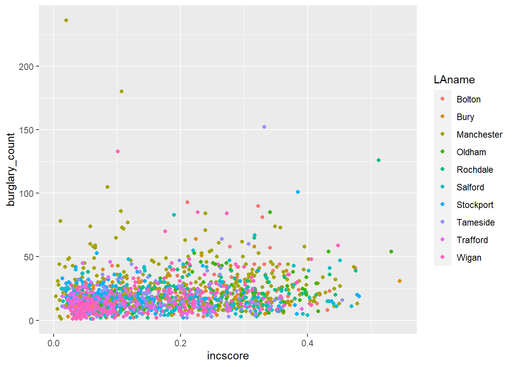
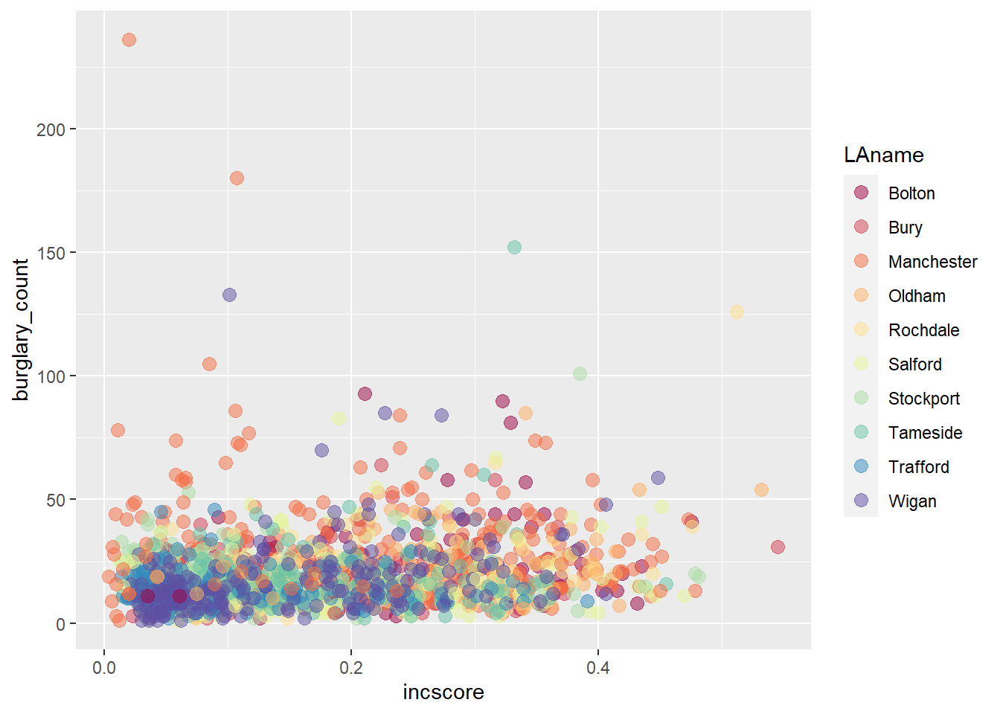
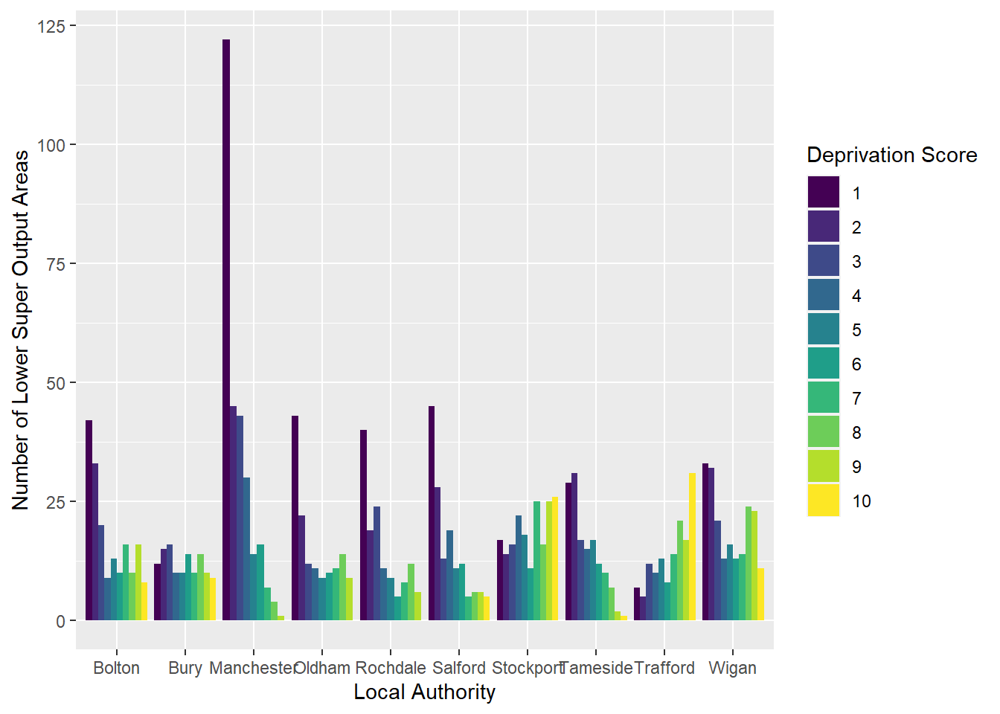
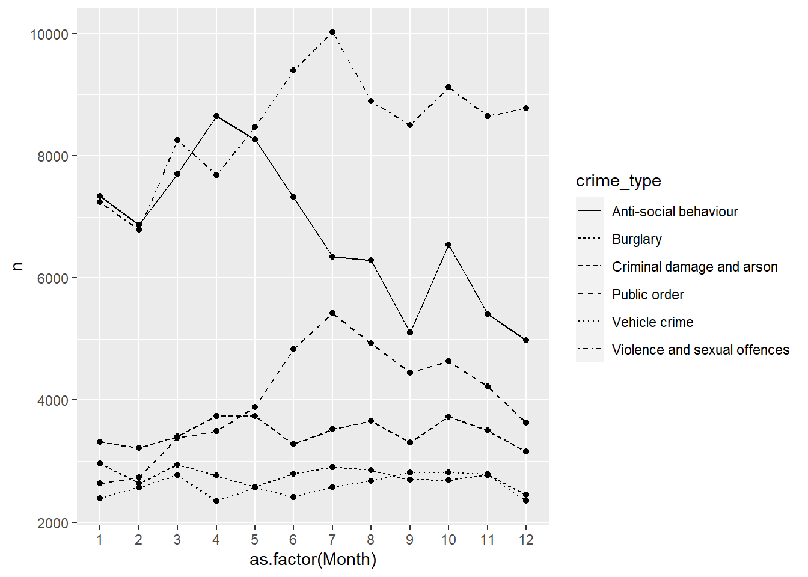

Chapter 3 Data Visualization
Layers and Graphs
Learning Outcomes:
- Understand what Grammar of Graphics and its corresponding package
ggplot2are - Learn how to use
ggplot2to create different visualizations
Today’s Learning Tools:
Total number of activities: 12
Data:
- Official crime data from England and Wales
Packages:
gglot2readr
Functions introduced (and packages to which they belong)
aes(): Mapping aesthetics to variables (ggplot2)as.factor(): Convert to factor, including specifying levels (base R)facet_wrap(): Facet graphics by one or more variables (ggplot2)geom_histogram(): Geometry layer for histograms (ggplot2)geom_line(): Geometry layer for line charts (ggplot2)geom_point(): Geometry layer for scatterplots (ggplot2)ggplot(): Initialize a ggplot graphic, i.e., specify data, aesthetics (ggplot2)labs(): Specify labels for ggplot object, e.g., title, caption (ggplot2)range(): Compute the minimum and maximum values (base R)read_csv(): Read in comma separated values file (readr)scale_color_brewer(): Default color scheme options (ggplot2)scale_color_viridis_d(): Colour-blind-considerate palettes fromviridispackage (ggplot2)theme(): Customise ggplot graphics (ggplot2)theme_minimal(): Default minimalist theme forggplotgraphics (ggplot2)
3.1 Grammar of Graphics
Today we learn the basics of data visualization in R using a package called ggplot2 within the tidyverse, one of the most popular packages for making high-quality, reproducible graphics. The framework on which ggplot2 is based derives from Hadley Wickham’s (2010) A Layered Grammar of Graphics.
Wickham advances the work of Grammar of Graphics by proposing a layered approach to describe and build graphics in a structured manner. Layers, according to Wickham, are used to describe any graphic or visualization. The three primary layers are (1) the data, (2) the aesthetics, and (3) the geometric objects:
- Data: usually the data frame with tidy rows and columns.
- Aesthetics: the visual characteristics that represent the data, or variables. At its simplest, these could be an x- and y-axis, and can extend to other aesthetics like colour, size, and shape, which are mapped to variables.
- Geometric objects: also known as ‘geoms’ and represent the data points in the visualisation, such as dots or lines.
A. Visualize Table 3

B. Using Grammar of Graphics approach to convert elements of Table 3 into layers

C. Integrating layers of Table 3
Why is this important? Visualizing your data helps you to have a better understanding of them before moving on to more advanced and complex analyses. Numbers themselves can be deceptive and complicated, so by visualizing them, you can identify any patterns or anomalies.
3.1.1 Activity 1: Getting Ready
Before we ‘layer up’, let’s do the following:- Open up your existing
Rproject like you had learned last week - Install and load the
gglot2andreadrpackages using theinstall.packages() - Open the datasets containing crime data from Greater Manchester, England, (gmp_2017.csv and gmp_monthly_2017.csv) using the
read_csv()function to import the datasets, specifying the working directory withhere(). Respectively name the data framesburglary_dfandmonthly_dfby using the<-assignment operator:
# gmp_2017.csv
burglary_df <- read_csv(here("Datasets", "gmp_2017.csv"))
# now try for the 'monthly_df'Nothing to put down in the group google doc for this first activity. As long as the dataframes and packages are loaded, then you have completed the activity.
3.2 ggplot2
As you learn to create graphs in ggplot2, you will see that the code reflects building these graphs as layers. This will take getting used to if you are only familiar with building graphs from a template in Excel. You can also reuse chunks of code to create different kinds of graphics or identical ones in other datasets. Today we focus on the ggplot2 package to learn our three substantive topics: layers, graphs for nominal and ordinal data, and graphs for interval and ratio data.
3.2.0.1 Activity 2: Getting to Know New Data
Before we dive into those topics, we need to get into the habit of getting to know our data. First, let us use the function View() and then the function class() to look at how R treats each variable for each dataset.
In burglary_df, there are eight variables. For example, the IMDscore variable combines seven domains of deprivation into one index: income, employment, education, health, crime, barriers to housing/services, and living environment. IMDrank is a variable that ranks all 32,844 Lower Super Output Areas (LSOAs) from highest to lowest.
What are LSOAs? They are small geographical areas developed from census information in order to calculate a range of statistics on neighbourhoods. You will see that by using the range() function (range(burglary_df$IMDrank)), that not all LSOAs are included, as this dataset only contains cases from Greater Manchester.
In monthly_df, there are three variables. There is a lot of information in this data frame as there are crime counts for various different crimes, spread across each month of the year. Note that the data are in long format. This is a useful and typical format for longitudinal data because our time variable (i.e., months) is contained in one variable. This will make it easier to create graphics showing change over time.
When you read a good quantitative research paper, its methods section will state the number of cases analysed with n = , whereby ‘n’ represents ‘number of cases’. This is known as sample size. For example, if the sample size of a study is two-hundred, the methods section would state it as ‘n= 200’.
In your group google doc, type out the following: the number of entries (cases) for each dataframe. Type out the number following n = . In addition, state what you think the unit of analysis is in each dataframe.
3.3 Today’s 3
Now that we have gotten to know our data, onto our three main topics: layers, graphs for nominal and ordinal data, and graphs for interval and ratio data.
3.3.1 Layers
To understand layers and how they are generated in ggplot2, we begin with a scatterplot. This is a graph that shows the relationship between two continuous variables – in other words, between two variables that are both either interval or ratio level. So, a scatterplot is helping us to visualize this relationship. In the burglary_df, we may be interested in understanding the relationship between deprivation and burglary victimisation.
3.3.1.1 Activity 3: Using ggplot2 to Create a Scatterplot
Our research question, therefore, is: What is the relationship between income and burglary counts?
Following the grammar of graphics layered approach, let us first make the data layer:
The Plots window will appear and will be blank. The graphic will need the other two layers, aesthetics and a geometric object.
The second layer is the aesthetics. Recall that these are about mapping the visual properties. Since our research question is about the relationship between income and burglary count, it would make sense to map these variables to the x and y axes:
# We use the variable ‘incscore’ for our measure of income – why do you think this is the best variable to represent income?
ggplot(data = burglary_df, mapping = aes(x = incscore, y = burglary_count))Now the Plots window shows the axis and the break labels. You can change these yourself later.
The last layer is the geometric object, or geometry, layer. It has numerous functions, each beginning with the argument geom_. To create our scatterplot, we use the function geom_point .

Now the scatterplot in all its glory appears. What can you say about the relationship between deprivation and burglary victimisation? In your group google doc, type out what you think is the relationship between these two variables.
3.3.1.2 Activity 4: Adding a Third Variable to a Scatterplot
Maybe it would be helpful if we included other information like how local authorities may play a role in this relationship. To do so, we colour each point by the variable LAname using the color argument:
ggplot(data = burglary_df, mapping = aes(x = incscore, y = burglary_count, color = LAname)) +
geom_point()In your group google doc, state what you observe from this new visual. What sort of relationship does it seem to show between burglary counts and income?
As previously mentioned, a number of other functions are available for the geom_ function such as shape, linetype, size, fill, and alpha (transparency). But these depend on the geometry being used and the class of variable being mapped to the aesthetic. For example, try the shape aesthetic for LAname, which will vary the shape of each point according to local authority. A warning message appears – what is it telling you?
This relates to the grammar of graphics philosophy on how people understand information, and ggplot2 will warn you when it thinks the graphic is difficult to interpret or, worse, misleading.
3.3.1.3 Activity 5: Colours!
The colour palette that appeared for our previous scatterplot is a default one, and there are a number of default colour palettes available. We can specify a colour palette using an additional layer with the function scale_color_brewer(). For example:
ggplot(data = burglary_df, mapping = aes(x = incscore, y = burglary_count, color = LAname)) +
geom_point() +
scale_color_brewer(palette = "Spectral")In addition, the viridis package has a number of colour palettes that consider colour blindness where readers are unable to differentiate colours on the graphic. It is already integrated into ggplot2, so there is no need to install it separately. For example, we take the previous code and replace the last line with a viridis colour palette for categorical variables:
ggplot(data = burglary_df, mapping = aes(x = incscore, y = burglary_count, color = LAname)) +
geom_point() +
scale_color_viridis_d() # or scale_color_viridis_c() for a continuous variable 
Nothing to add in the good ole’ group google doc for the next three (6 to 8) activities, but go through them as they will be useful for your class assignment.
3.3.1.4 Activity 6: Sizes & Transparency
Recall that the geometric object layer is about the data points themselves. You can change their appearance within the geom_point function. To increase the size of the points and make them transparent, we use the size and alpha arguments. The default for size is 1, so anything lower than 1 will make points smaller while anything larger than 1 will make the points bigger. The default for alpha is also 1, which means total opaqueness, so you can only go lower to make things more transparent. For example:
#Below, we want our data points to be a bit bigger ( 3 ) and more transparent ( 0.5 ) than the default
ggplot(data = burglary_df, mapping = aes(x = incscore, y = burglary_count, color = LAname)) +
geom_point(size = 3, alpha = 0.5) +
scale_color_brewer(palette = "Spectral")3.3.1.5 Activity 7: Labels
The graphic is looking good, but the labels will need tweaking if we do not like the default ones, which are our variable names. We use the labs () layer to change the labels for the x and y axes as well as the graphic title:
ggplot(data = burglary_df, mapping = aes(x = incscore, y = burglary_count, color = LAname)) +
geom_point(size = 3, alpha = 0.5) +
scale_color_brewer(palette = "Spectral") +
labs(x = "Income score", y = "Burglary count", title = "Income and burglary and victimization", color = "Local Authority")3.3.1.6 Activity 8: Built-in Themes
A final touch to your graphic can be the use of themes. These change the overall appearance of your graphic. The default theme we have for our graphic is theme_gray(), but we can go for a minimalist look by using theme_minimal (). There are a number of these customised themes like one that is inspired by The Economist ( theme_economist () )
# Changing graphic to the minimal theme with the last line of code
ggplot(data = burglary_df, mapping = aes(x = incscore, y = burglary_count, color = LAname)) +
geom_point(size = 3, alpha = 0.5) +
scale_color_brewer(palette = "Spectral") +
labs(x = "Income score", y = "Burglary count", title = "Income and burglary and victimization", caption = "Income score from 2019 IMD. Burglary counts from 2017." , color = "Local Authority") +
theme_minimal()3.3.2 Graphs for Nominal and Ordinal Data
3.3.2.1 Activity 9: Bar graphs
To explore the count distribution of nominal or ordinal variables, use the bar graph. We may be interested to know the number of neighbourhoods falling into each indice of multiple deprivation (IMD) decile, a key indicator of criminality. Those in decile 1 are within the most deprived 10% of LSOAs nationally; those in decile 10 are considered within the least deprived 10% of LSOAs nationally.
The variable of interest, IMDdeci, is classed as numeric but we will need to treat it as a factor or else the default x-axis will include non-integer values like 7.5 .
Instead of making a new object, ggplot can calculate these frequencies by only specifying the x-axis and using the function as.factor():
ggplot(data = burglary_df) +
geom_bar(mapping = aes(x = as.factor(IMDdeci))) + # convert IMDdeci to a factor with as.factor
labs(x = "Deprivation Score", y = "Number of Lower Super Output Areas")3.3.2.2 Grouped Bar Graphs
If we are interested in the distribution of deprivation like the previous bar graph but would like to see it by local authority, we can use the grouped bar graph. The subsequent example is filling the colour of each bar by local authority and arranging the bars side by side using the arguments fill and position:
# the ‘dodge’ position means that the bars avoid or ‘dodge’ each other
ggplot(data = burglary_df) +
geom_bar(mapping = aes(x = as.factor(IMDdeci), fill = LAname), position = "dodge") +
labs(x = "Deprivation Score", y = "Number of Lower Super Output Areas", fill = "Local Authority")In your google doc, state what you observe from the bar graph and grouped bar graph depicting the relationship between deprivation and LSOAs.
3.3.2.3 Multiple Bar Graphs
Another useful visual is multiple bar graphs. This creates different plots for each level of a factor instead of putting lots of information into one graphic. Using the facet_wrap () layer, we make the information obtained from the previous scatterplot, where we coloured in each point by local authority, clearer.
Although the scatterplot uses numeric variables, we use this information by local authority, and LAname is classed as factor:
# To facet the scatterplot by local authority, ‘ ~ ‘ is used next to ‘LAname’
ggplot(data = burglary_df) +
geom_point(mapping = aes(x = incscore, y = burglary_count)) +
facet_wrap(~LAname)
It is important to choose an appropriate graph, so thought is required. May the following graphic be fair warning:

3.3.3 Graphs for Interval and Ratio Data
3.3.3.1 Activity 10: Histograms
Histograms differ from scatterplots because they require only one numeric variable and they create bins, visualised as bars, to count the frequency of each bar. We create a histogram of the variable IMDscore, the overall score of deprivation in each neighbourhood:
## `stat_bin()` using `bins = 30`. Pick better value with `binwidth`.How the histogram looks, and therefore, the conclusions drawn from the visual, are sensitive to the number of bins. You should try different specifications of the bin-width until you find one that tells the complete and concise story of the data. Specifying the size of bins is done using the argument bin_width; the default size is 30 and you can change this to get a rougher or a more granular idea:
# Using bin-width of 1 we are essentially creating a bar for every increase in level of deprivation
ggplot(data = burglary_df, mapping = aes(x = IMDscore)) +
geom_histogram(binwidth = 1)Play around with the bin widths to find which one looks the most visually comprehensible. In your google doc, state what bin width you think does the job, and why.
3.3.3.2 Activity 11: Line Graphs
A very good way of visualizing trends over time are line graphs. For this, let us use the monthly_df data frame. Ensure it is loaded into your environment. Have a look at the structure of these data to get to know them.
The data is in long format: we have a single month variable for 12 months’ worth of data (rather than one variable or column for each month). Setting longitudinal data up in long format allows us to specify the aesthetics (e.g., x- and y-axes) easily.
For a line graph, we use the function geom_line(). We plan to plot the counts to show the trends of different crimes over the course of the year. Our time variable, month, should run along the x-axis, and the count variable, n, should run on the y-axis.
To show each crime type separately, we use the group aesthetic and a new aesthetic, linetype, which uses different patterns for each group. To show our time measurement points, we also add geom_point ():
ggplot(data = monthly_df, aes(x = as.factor(Month), y = n, group = crime_type, linetype = crime_type)) +
geom_line() +
geom_point()Now, in your google doc, state what you observe from this line graph on different crimes throughout the months.
3.3.3.3 Activity 12: Boxplots
If you want more information about your data than a histogram can give, a box (and whisker) plot may be what you are looking for. A boxplot visualizes the minimum, maximum, interquartile range, the median, and any unusual observations.
For this example, we return to the burglary_df data, and focus on the distribution of burglary counts. In addition, we make a boxplot for each deprivation decile to show how LSOAs in the most deprived deciles often have higher median burglary counts.
We send all of this information, the boxplots, into one object called MyWhiskerPlot, to which we can return in case:
MyWhiskerPlot <- ggplot(data = burglary_df) +
geom_boxplot(mapping = aes(x = as.factor(IMDdeci), y = burglary_count, group = as.factor(IMDdeci), fill = as.factor(IMDdeci)))
MyWhiskerPlot +
labs(x = "Deprivation Scale", y = "Number of Burglaries")
In your group google doc, state what you observe from your newly created boxplot.
3.4 SUMMARY
Today was about using a popular package called ggplot2 for effectively visualizing data. We learn this because it is important to understand our data before embarking on more complex analyses. If we do not understand our data beforehand, we risk misinterpreting what the data are trying to tell us. The package is based on this approach called Grammar of Graphics, which proposes a ‘grammar’ to describe and construct statistical graphics. The package, however, sees the creation of data visuals accomplished through layers.
Our first topic we learned was about these layers, specifically data, aesthetics, and geometric objects. As a final touch, themes changed the overall appearance of your graphic. Our second and third topics introduced us to graphs that we can use for all types of variables, and how to create them in ggplot2. One example was the histogram, whereby adjusting the width of the bins helped for better interpretation of the data.
Hurrah: homework time!